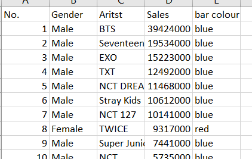

Background |
The Kpop Industry is a rather competitive one, with new groups forming, and much content being generated, every year. While there are definitely many factors that could contribute to a group's success, a common question, is if Male Kpop idols would tend to do better than female idols.
While the gender split amongst Kpop idols is roughly equal (Rahmi, 2021),
the gender split of fans is slightly more skewed, at about 7 Female : 3 Male (check out the Data Story!).Traditionally, Kpop male idol groups dominated physical album sales (because female fans are more “committed”), while female groups tended to match up better in online streaming and downloads (Yoon 2022) by appealing to the general public. Traditionally, it is assumed that male Kpop idols would meet with more success as they would appeal to more female fans. Today, Kpop girl groups have begun targeting the newer generation, with newer concepts emphasizing, and even commodifying, the theme of female empowerment and breaking stereotypes (Sun, Paje & Lee, 2021; to Zhang et al., 2022). Through my data story, I will endeavour to explore this. |
|---|---|

Problem Statement |
Are Male Kpop Idol Group more likely to be successful than Female ones? |

Data |
I have created my own data set, using data of Kpop idol groups, based on 3 dimensions: I will further filter the data by gender (i.e Male or Female artist) and use charts to conduct analyses. |

Findings |
I am currently done with visualizing data for the physical sales. It seems that it is mostly true that male Kpop groups are outperforming female Kpop groups, and by a large margin, in fact.
However, my preliminary viewing of the rest of the data, seems to suggest that female Kpop groups are doing as well, or even better, in terms of Digital Presence and Brand Reputation scores. |

Analysis |
While it may seem that past trends are still holding strong today, a closer look at the data of Kpop groups with the higher brand reputation ranking today, will reveal that even in terms of Physical Sales, up-and-coming female groups today are catching up.
Furthermore, physical albums are only one dimension of success – perhaps they may not be as important given so many other dimensions. |
|
Recommendations |
Analysis of other Dimensions:
|
Firstly, here is the PDF containing the concepts from class that I have used in my Final Project so far.
Initially, this was my project idea!
However, I decided to change my topic from an analysis of Blackpink's growth, to a more general investigation on whether gender may play a part in Kpop Idols' success.
I felt that I would have more data to work with, and the implications of my study may potentially be useful in the study of both the Kpop phenomenon, and even in gender studies.
The data I plan to use can be found in my Story Board!
To come up with the layout of the website for my data story, I followed 2 YouTube tutorials: this for the popout navigation pane, and this for the top navigation bar. I combined what I liked from both together! Here's how it looked like when I first started out:
As you can see, the top navigation bar was initially separate from the links, as I wanted to use it for navigating through the data story page. I then decided the side popout bar would be a better fit, and put the links into the top navigation bar so that they could be used to navigate between the data story and other aspects of my submission!
Another interesting thing I learnt was how to add highlight to a text via Javascript., which I utilized in the Introduction section of my Data Story.
Week 10 Diary Questions
|
What is your project about? |
Gender in Kpop |
|---|---|
|
What is the question you plan to answer? |
Are Male Kpop Idol Group more likely to be successful than Female ones? |

Why is this an important question? |
Traditionally, Kpop male idol groups dominated physical album sales, while female groups tended to match up better in online streaming and downloads (Yoon 2022), but these may be changing.
Increasingly, it has been brought to light that marketing strategies for women in Kpop face discrimination in terms of agency, over-sexualization and compartmentalization in gender roles that male idols are much less restricted by (Jonas, 2021), in order to appeal to the male gaze. As such, today, Kpop girl groups have begun targeting the newer generation, with newer concepts emphasizing, and even commodifying, the theme of female empowerment and breaking stereotypes (Sun, Paje & Lee, 2021; to Zhang et al., 2022). This study will explore preliminarily if this strategy is proving successful. |

Which rows and columns of the dataset do you plan to use, to answer this question? |
As there is no large central dataset online for Kpop idols, I had to construct my own dataset, as attached here. I was able to collect data on 3 broad categories: physical album sales, digital streams, and market brand reputation scores.
However, I decided not to include (filtered out) data on any Korean singers who were not a Kpop group, to simplify the process, as there can be many ambiguities regarding whether certain artists, in particular soloists, could be counted as Kpop idols. In my current excel file, the data is classified into a few sheets. I will probably split them up into individual CSV files for use with my code. Here is the excel file containing the data that I have collated! |
Started off this week by beginning to add my references to the Data Story. I learnt how to add the hanging indent for APA citations from this website.
Thereafter, I faced some difficulty envisioning the flow and aim of my data story. In particular, it was difficult for me to answer question 2 (why my data story answers an important question). I took some time to do some literature review, and to plan out the rationale and content flow of my data story, which I am satisfied with. I will be implementing the changes in my data story subsequently.
I also took the time to firm up my data set. One problem with not having a large data base online (unlike for topics like world happiness etc) was that I had to make my own data set, which proved arduous. A lot of manual entry and data filtering was done (so that I did not have to key in pointless data) and my computer even crashed a few times!
First off, I will list down the answers to the Week 11 question - In the physical and digital data segments, I will likely use:
Firstly, I updated the story board!
This week, I followed this youtube video to learn how to easily have multiple charts side by side in nicely formatted boxes.
I also figured out I could input the border colours of the bar chart into excel, and extract them as an array using the fetch function, to easily use it under backgroundColor to colour the bars according to gender.

Next, I followed this youtube tutorial to learn how to convert arrays into the data structure necessary to construct scatter charts
I then tried using suggestions to add labels to the individual points, but for some reason, every point was getting labelled with every label in the array! I will need more time to fix this.
I was also unable to use the same method of colouring the dots, that I used for the bar charts.
Jonas, L. (2021). Crafted for the Male Gaze: Gender Discrimination in the K-Pop Industry. Journal of International Women's Studies, 22(7), 3-18.
Rahmi, F. (2021, February 1). Exploratory data of K-pop idols. The Startup. https://medium.com/swlh/exploratory-data-of-k-pop-idols-8693b44ac312#
Sun, Q., Paje, D., & Lee, H. (2022). “Female empowerment is being commercialized”: online reception of girl crush trend among feminist K-pop fans. Feminist Media Studies, 1-14.
Yoon, S.Y. (2022, December 16). Girl group gets the ears, boy bands get the dollars Korea JoongAng Daily. https://koreajoongangdaily.joins.com/2022/12/16/business/industry/Korea-Kpop-Circle-Chart/20221216154245715.html
Zhang, Y., Chen, L., Chen, J., Mi, X., & Zhu, S. (2022, December). Redefining Womanhood in Generation Z: An Analysis of Gender Representation and Awareness in K-pop Culture. In 2022 5th International Conference on Humanities Education and Social Sciences (ICHESS 2022) (pp. 2868-2877). Atlantis Press.